BigQuery is a fully-managed, petabyte-scale, low-cost enterprise data warehouse for analytics. BigQuery is serverless. You do not need to set up and manage clusters.
A BigQuery dataset resides in a GCP project and contains one or more tables. You can query these datasets with SQL.
In this codelab, you will use the BigQuery web UI in the GCP Console to understand partitioning and clustering in BigQuery. BigQuery's table partitioning and clustering helps structuring your data to match common data access patterns. Partition and clustering is key to fully maximize BigQuery performance and cost when querying over a specific data range. It results in scanning less data per query, and pruning is determined before query start time.
For more information about BigQuery, see BigQuery documentation.
To complete this lab, you need:
To work with BigQuery, you need to create a GCP project or select an existing project.
To create a new project, follow these steps:
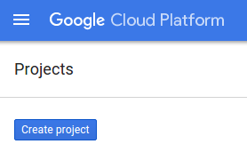
Otherwise, create a new project from the project selection menu:
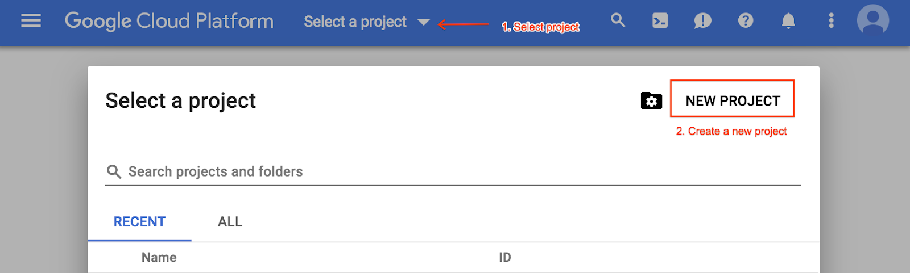
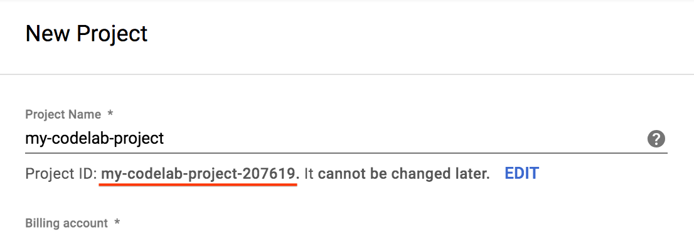
BigQuery allows you to work with public datasets, including BBC News, GitHub repos, Stack Overflow, and the US National Oceanic and Atmospheric Administration (NOAA) datasets. You do not need to load these datasets into BigQuery. You just need to open the datasets to browse and query them in BigQuery. In this codelab, you will work with the Stack Overflow public dataset.
The Stack Overflow dataset contains information about posts, tags, badges, comments, users, and more. To browse the Stack Overflow dataset in the BigQuery web UI, follow these steps:
For more information about all the public datasets available in BigQuery, see Google BigQuery Public Datasets.
Browsing a dataset is a good way to understand the data that you are working with, but querying datasets is where BigQuery really shines. This section teaches you how to run BigQuery queries. You do not need to know any SQL at this point. You can copy and paste the queries below.
To run a query, complete the following steps:
SELECT EXTRACT(YEAR FROM creation_date) AS creation_year, COUNT(*) AS total_posts FROM `bigquery-public-data.stackoverflow.posts_questions` GROUP BY creation_year ORDER BY total_posts DESC LIMIT 10
In the previous section, you queried public datasets that BigQuery makes available to you. In this section, you will create a new table in BigQuery from an existing table. You will create a new table with data sampled from the Stack Overflow public dataset posts_questions table and then query the table.
To create and load table data into BigQuery, first create a BigQuery dataset to hold the data by completing the following steps:
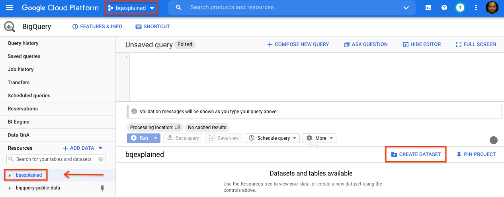
stackoverflow. Leave all of the other default settings in place and click OK.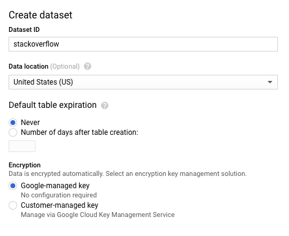
Now that you have created a BigQuery dataset, you can create a new table in BigQuery. To create a table with data from an existing table, you will query the 2018 Stack Overflow posts dataset and write the results to a new table, by completing the following steps:
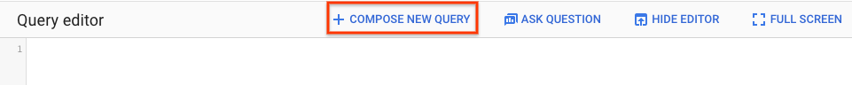
CREATE OR REPLACE TABLE `stackoverflow.questions_2018` AS SELECT id, title, accepted_answer_id, creation_date, answer_count , comment_count , favorite_count, view_count, tags FROM `bigquery-public-data.stackoverflow.posts_questions` WHERE creation_date BETWEEN '2018-01-01' AND '2019-01-01';
Now that you have created a BigQuery table, let's run a query to return Stack Overflow posts with questions and titles along with a few other statistics such as number of answers, comments, views and favorites. Complete the following steps:
SELECT id, title, accepted_answer_id, creation_date, answer_count , comment_count , favorite_count, view_count FROM `stackoverflow.questions_2018` WHERE creation_date BETWEEN '2018-01-01' AND '2018-02-01' AND tags = 'android';
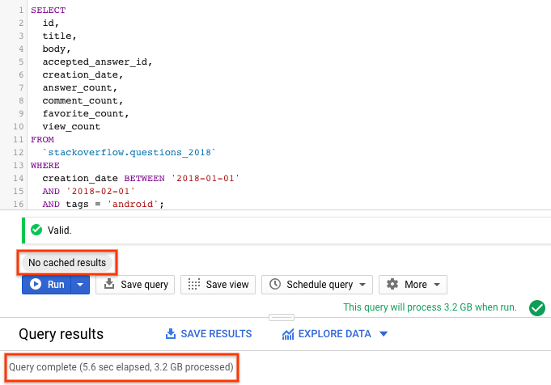
In the previous section, you created a new table in BigQuery with data from `posts_questions` table using the Stack Overflow public dataset. We queried this dataset with caching disabled and observed the query performance. In this section, you will create a new partitioned table from the same Stack Overflow public dataset's `posts_questions` table and observe the query performance.
A partitioned table is a special table that is divided into segments, called partitions, that make it easier to manage and query your data. You can typically split large tables into many smaller partitions using data ingestion time or TIMESTAMP/DATE column or an INTEGER column. We will create a DATE partitioned table.
Learn more about partitioned tables here.
To create a partitioned table with data from an existing table or query, you will query the 2018 Stackoverflow posts dataset and write results to a new table, complete the following steps:
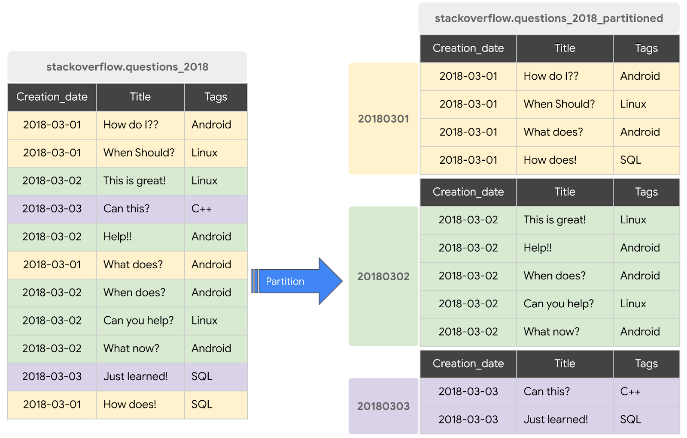
CREATE OR REPLACE TABLE `stackoverflow.questions_2018_partitioned` PARTITION BY DATE(creation_date) AS SELECT id, title, accepted_answer_id, creation_date, answer_count , comment_count , favorite_count, view_count, tags FROM `bigquery-public-data.stackoverflow.posts_questions` WHERE creation_date BETWEEN '2018-01-01' AND '2019-01-01';
Now that you have created a BigQuery partitioned table, let's run the same query, this time on the partitioned table, to return Stack Overflow posts with questions and titles along with a few other statistics such as number of answers, comments, views and favorites. Complete the following steps:
SELECT id, title, accepted_answer_id, creation_date, answer_count , comment_count , favorite_count, view_count FROM `stackoverflow.questions_2018_partitioned` WHERE creation_date BETWEEN '2018-01-01' AND '2018-02-01' AND tags = 'android';
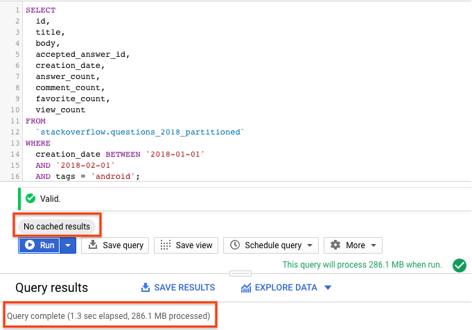
You should see that the performance of the query with partitioned table is better than the non-partitioned table since BigQuery prunes the partitions i.e. scans only the required partitions processing less data and running faster. This optimizes the query costs and query performance.
In the previous section, you created a partitioned table in BigQuery with data from the `posts_questions` table in the Stack Overflow public dataset. We queried this table with caching disabled and observed the query performance with both non-partitioned and partitioned tables. In this section, you will create a new clustered table from the same Stack Overflow public dataset's `posts_questions` table and observe the query performance.
When a table is clustered in BigQuery, the table data is automatically organized based on the contents of one or more columns in the table's schema. The columns you specify are used to collocate related data. When data is written to a clustered table, BigQuery sorts the data using the values in the clustering columns. These values are used to organize the data into multiple blocks in BigQuery storage. The order of clustered columns determines the sort order of the data. When new data is added to a table or a specific partition, BigQuery performs automatic re-clustering in the background to restore the sort property of the table or partition.
Learn more about working with clustered tables here.
In this section, you will create a new table partitioned on creation_date and clustered on the tags column based on the query access pattern. To create a clustered table with data from an existing table or query, you will query the 2018 Stack Overflow posts table and write the results to a new table, by completing the following steps:
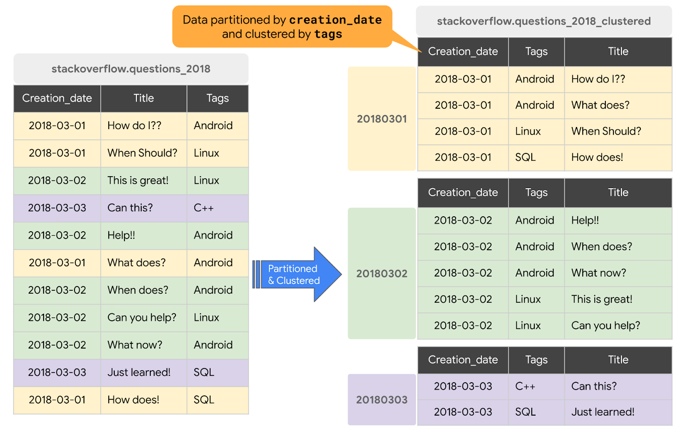
#standardSQL CREATE OR REPLACE TABLE `stackoverflow.questions_2018_clustered` PARTITION BY DATE(creation_date) CLUSTER BY tags AS SELECT id, title, accepted_answer_id, creation_date, answer_count , comment_count , favorite_count, view_count, tags FROM `bigquery-public-data.stackoverflow.posts_questions` WHERE creation_date BETWEEN '2018-01-01' AND '2019-01-01';
Now that you have created a BigQuery clustered table, let's run the same query again, this time on the partitioned and clustered table, to return Stack Overflow posts with questions and titles along with a few other statistics such as number of answers, comments, views and favorites. Complete the following steps:
SELECT id, title, accepted_answer_id, creation_date, answer_count , comment_count , favorite_count, view_count FROM `stackoverflow.questions_2018_clustered` WHERE creation_date BETWEEN '2018-01-01' AND '2018-02-01' AND tags = 'android';
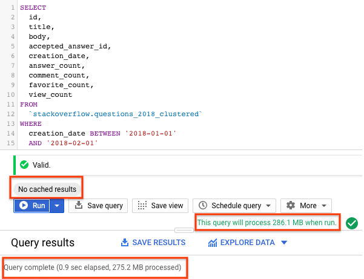
With a partitioned and clustered table, the query scanned less data than a partitioned table or a non-partitioned table. The way data is organized by partitioning and clustering minimizes the amount of data scanned by slot workers thereby improving query performance and optimizing costs.
Unless you plan to continue working with your stackoverflow dataset, you should delete it and delete the project that you created for this codelab.
To delete the BigQuery dataset, perform the following steps:
To delete the GCP project that you created for this codelab, perform the following steps:
Congratulations! You have now learned
Note that you did not have to set up or manage clusters to work with datasets.